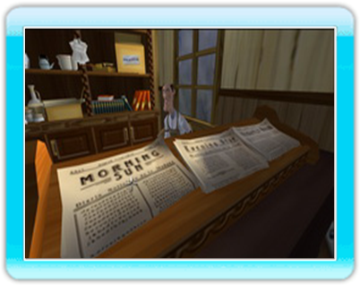

12 |
Livy, Willy, Alvin |
 |
|

Livy, la sirvienta Ni más ni menos que eso, que no es poco. Livy es una extensión, algo rechoncha y bastante parlanchina, de la voluntad de su ama, por la que está dispuesta a todo.
Willy, el trapichero
Capaz de conseguir casi cualquier cosa, siempre que sea falsificada o ilegal, el
Willy puede ser de una gran ayuda, siempre que se le pague por sus servicios. El único granjero, junto con Joe Banister, que ha conseguido conservar su granja, el viejo Alvin está decidido a luchar hasta el final contra Starek. |
 |
 |
 |